If you found this, congrats
Variants
M4
 The base model M4 had a 75mm main armament. It had 50mm of upper frontal armor with a cast turret and a VVSS suspension.
The base model M4 had a 75mm main armament. It had 50mm of upper frontal armor with a cast turret and a VVSS suspension.
M4A3E2 Sherman Jumbo
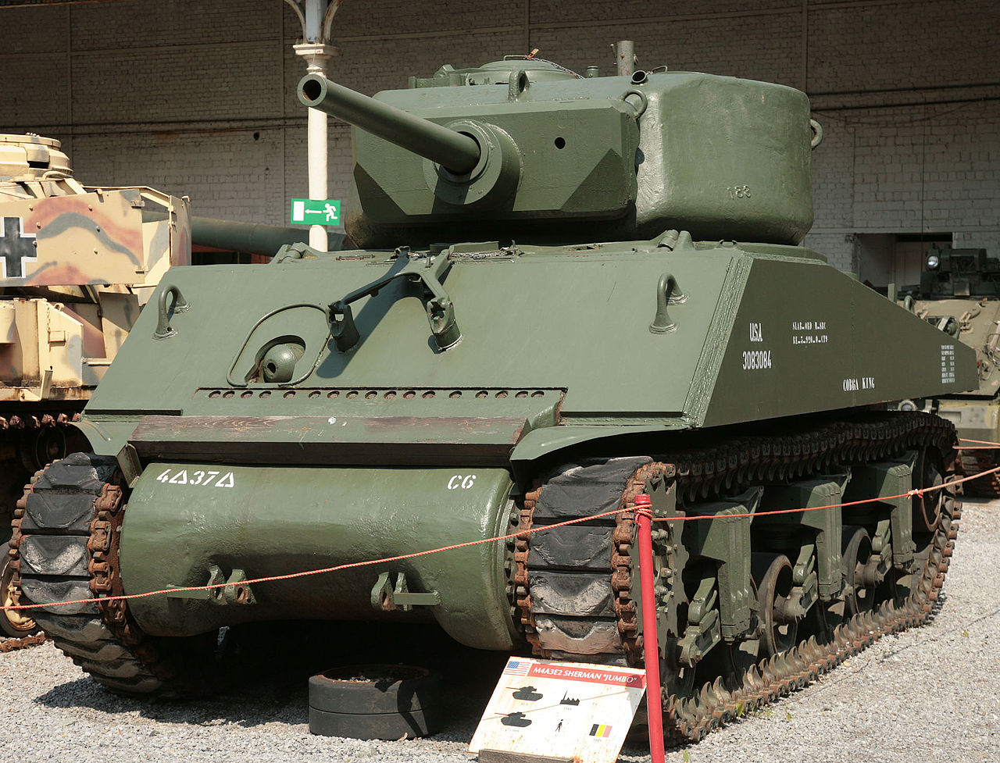 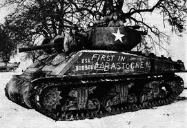 This model up armored the front and sides of the hull and the entire turret. The sides and rear of the turret were 155mm with the front mantlet being 177mm. After it came into service the 76mm gun was fitted into Sherman Jumbos.
M12 Howitzer motor Carriage
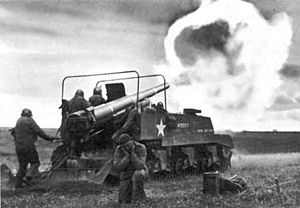 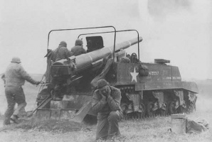The M12 is an artillery vehicle or howitzer motor carriage designed using the chasis of the M4 sherman and mounting a 155mm, or 6.1 inch cannon. It was designed for indirect fire, but was sometimes used for direct fire such as during the assualt on the siegfried line. It's gun had the ability to penetrate 7 feet of concrete at 2,000 yards.
M4 Easy 6
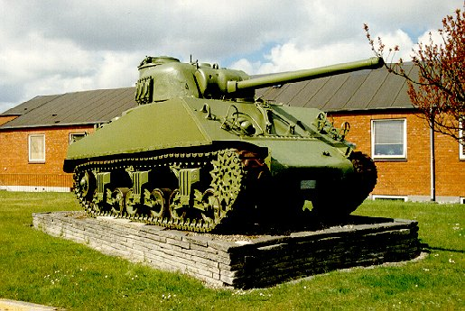
 The Easy 6 or E6 program was the first to mount the 76mm gun on shermans, although it is mistaken that the Easy 8 program was the first to mount the 76mm.
The Easy 6 or E6 program was the first to mount the 76mm gun on shermans, although it is mistaken that the Easy 8 program was the first to mount the 76mm.
M4A3E8 or Easy 8 or M4A4 76(W) HVSS
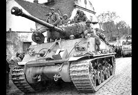 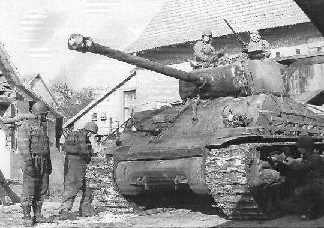The Easy 8 Sherman was the prefered version of the Sherman, it had the 76mm, an improved engine and better suspension. It also featured improved frontal armor compared to the original, although it didn't do much against the "Big cats" I.E. the tigers and panthers, it did help against the more common panzer III's and panzer IV's. On top of the extra armor, to improve the survivbility they added "wet" ammo storage which saw the ammo inside of a liquid that would reduced the chance of the ammo "cooking off" or exploding. This reduced the shell capacity from about 100 to 71.
M4 105mm
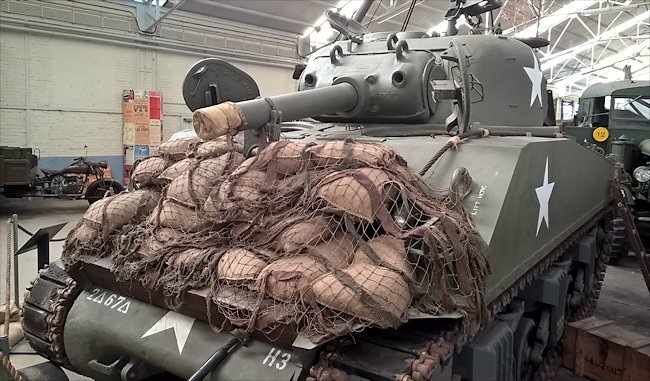
The M4 105mm is what is considered and assualt gun, it mounted a 105mm howitzer in a fully traversible turret and was a normal sherman chasis with a redesigned turret. Later models were also produced on the Easy 8 chasis with the HVSS suspension.
T34 Calliope
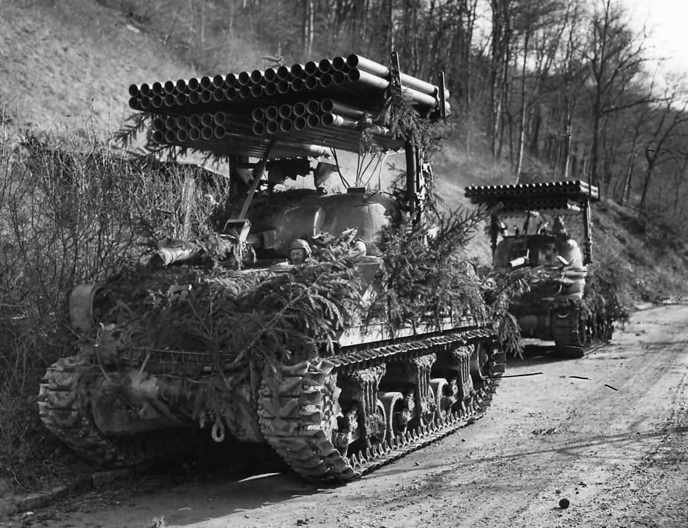 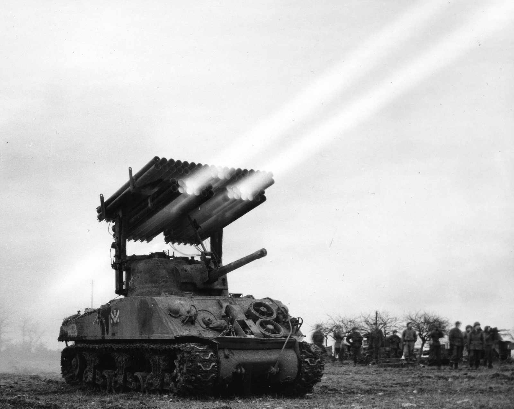The T34 Cillope was a M4 Sherman with a MLRS, multiple launch rocket system, installed on top of it, it had to drop the roof mounted .50 caliber M2 browing but gained 60 4.5 rockets on the roof. The T34E2 increased the diameter of these rocket to 7.2 inches but had the ssame capacity.
M4A3E8 Thunderbolt VII
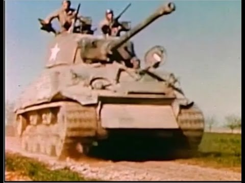 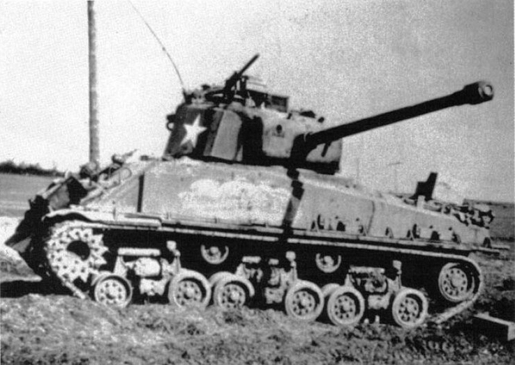Thunderbolt VII was not a series or model of shermans, rather it was one sherman belonging to Creighton Abrams. Thunderbolt VII had it's armor on the hull doubled to 127mm and its turret armor was also increased. It also had an additional .30 cal browing machine mounted on the top of the turret.